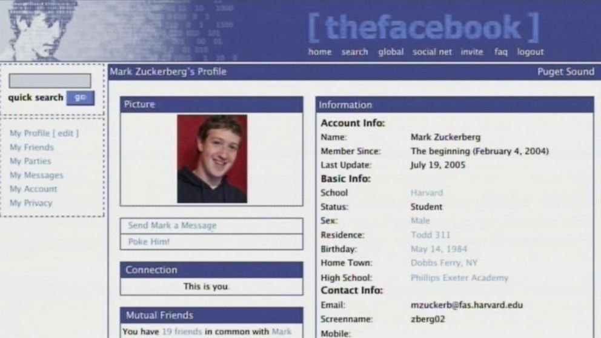
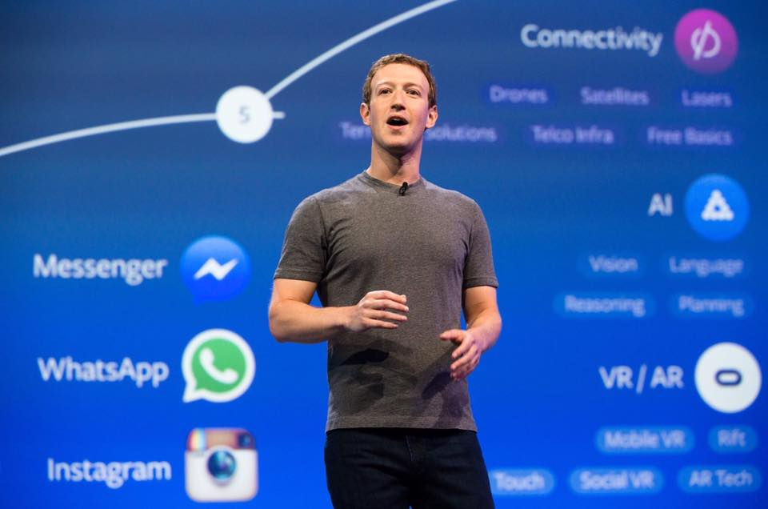

Története
A Facebook amerikai alapítású közösségi hálózat, amely 2004. február 4-én kezdte meg működését. Eredetileg Thefacebook-nak hívták. Az egyik legnagyobb ismeretségi hálózat a világon, amely 2011 februárjára már több mint 637 millió regisztrált felhasználót számlált. A Facebook a világ leggyakrabban használt szociális hálózatává vált a 2009. januári Compete.com rangsorolása alapján, az aktív havi felhasználók száma szerint, megelőzve a MySpace nevű közösségi oldalt.
2009. november 25-én Mark Zuckerberg bejelentette, hogy a Skype és a Twitter mintájára tőzsdére viszi a Facebookot. 2011 tavaszán a tőzsdei bevezetést még mindig korainak találták, és az időpontját 2012-re tették, közben azonban a Facebook értékét folyamatosan számítgatták és felbecsülték.
A tőzsdei bevezetésre végül 2012. május 18-án délután 17 órakor került sor. A következő mérföldkő 2012. október 4. – ezen a napon a Facebook elérte az 1 milliárd regisztrált felhasználót.
Felhasználóinak száma 1,23 milliárd, a teljes internetpopuláció 38%-a. Több mint egymilliárd felhasználó használja mobiljáról a Facebookot. 2017 júniusában újabb mérföldkőhöz érkezett a portál: az aktív felhasználók száma meghaladta a 2 milliárd főt (aktív felhasználónak számít, aki az elmúlt 30 napban legalább egyszer belépett az oldalra).
Az oldal létrehozásának ötlete eredetileg Mark Zuckerberg egyetemi előkészítő iskolájának, a Phillips Exeter Academynek fényképes, nyomtatott, könyv alakú kiadványa volt. Ezek a könyvek már évtizedek óta közkedveltek voltak, és használatban álltak a tanárok és a diákok számára. A Facebook története valójában 2003-ban kezdődött a Facemash nevű alkalmazás kidolgozásával. Adam D'Angelo, aki Mark Zuckerberg legjobb barátja volt a középiskolában, létrehozott az egyetemisták számára egy kezdetleges társasági oldalt. A programnak olyan sikere lett, hogy használóinak száma a százezret is meghaladta. A honlap népszerűségének hatására írta meg Mark Zuckerberg a CourseMatch programot, ami aztán a Facebook létrehozásához vezetett.